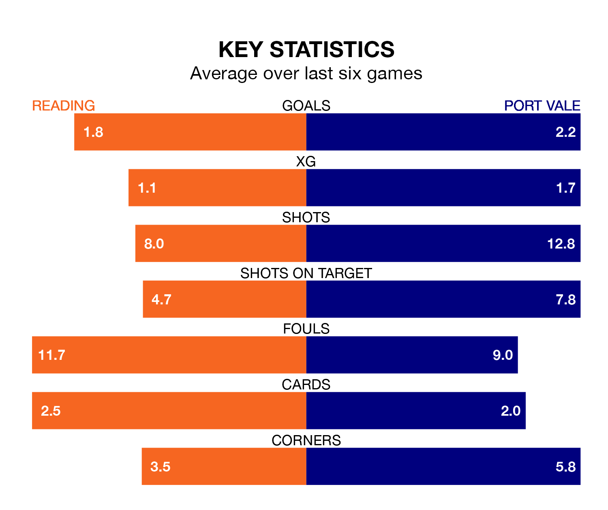

Reading face Port Vale on Saturday seeking to protect their long unbeaten run in EFL League One.
The Royals are unbeaten in six, with two wins and four draws, ahead of the 3pm kick-off.
They face a Vale team who have won two and drawn two over the same number of games.
With 28 goals in 25 games so far this season, Vale are scoring at below the league average rate with 1.1 goals per game. And they are conceding more than average, letting in 38 goals at a rate of 1.5 per game.
Reading, meanwhile, are above average scorers, with 1.4 goals per game, compared to a league average of 1.3. They have conceded 1.6 goals per game.
The Royals are 19th in the table after 25 games, of which they have won seven and drawn six, earning 27 points.
The Valiants are four places ahead of the hosts in 15th, with eight wins and six draws putting them on 30 points.
The away team's Ethan Chislett is among the league's most creative players, racking up seven assists in 22 appearances so far this season, and holding second spot in EFL League One's assist charts.
For Reading, Femi Azeez has set up the most goals, having laid on six assists in 25 games.
Reading's last match was on January 1, a 3-2 win against Exeter City, with Alex Hartridge (own goal), Azeez and Harvey Knibbs getting the goals for the Royals.
Vale drew 3-3 with Charlton Athletic last time out, on January 6, with Chislett, Gavin Massey and Uche Ikpeazu on the scoresheet.
Updated: 15:34, 08/01/24